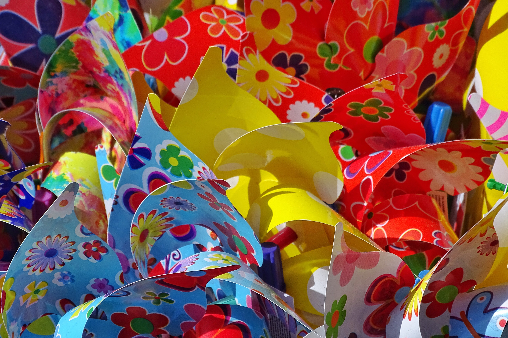
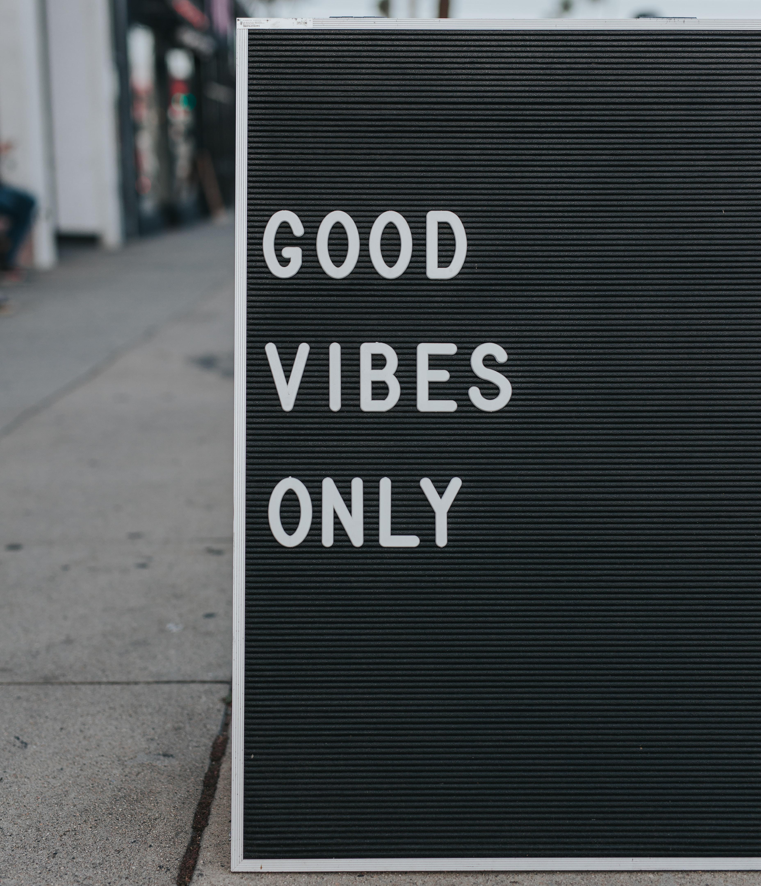

Дизайн — це творчий метод, процес і результат художньо-технічного проєктування промислових виробів, їхніх комплексів і
систем, орієнтований на досягнення найповнішої відповідності створюваних об'єктів і середовища загалом потребам людини, як
утилітарних, так і естетичних.
Дизайн — специфічний ряд проєктної діяльності, що об'єднує художньо-предметне мистецтво і
науково обґрунтовану інженерну практику у сфері індустріального виробництва. Реалізуючи функції дизайну: відображаючу,
виховну, пізнавальну, комунікативну, гедоністичну, інтелект використовує всі три типи мислительної діяльності: наочно-діловий,
чуттєво-образний, поняттєво-логічний.
Промисловий дизайн
Промисловий дизайн — використання комбінації прикладного мистецтва і прикладної науки для поліпшення естетики, ергономіки,
архітектури, функціональності і зручності використання продукту. Дизайн також може бути застосований для поліпшення конкурентоспроможності
продукту та виробництва. Роль промислового дизайнера — у створенні і виконанні проектних рішень з проблем форми, зручності
використання, фізичної ергономіки, маркетингу, розвитку бренду і продажів.
Дизайн середовища
Дизайн середовища — використання комбінації прикладного мистецтва і прикладної науки для дизайну житлових і громадьских приміщень,
виставкових стендів тощо.
Дизайнер середовища - це фахівець з комплексного дизайну простору і інтер`єру, що оточує людину.
Професія підходить тим, кого цікавить малювання і креслення. Дизайнер середовища перетворює не тільки зовнішній вигляд навколишнього
середовища і предметів, але і створює гармонію між їх внутрішньою суттю і функціональністю. Це відносно нова і дуже перспективна професія,
що виникла на стику двох традиційних наук - архітектури і прикладного мистецтва.
Графічний дизайн
Графічний дизайн — художньо-проєктна діяльність по створенню гармонійного та ефективного візуально-комунікативного середовища.
Графічний дизайн робить інноваційний внесок у розвиток соціально-економічної та культурної сфер життя,
сприяючи формуванню візуального ландшафту сучасності.
Арт-дизайн
Арт-дизайн (англ. art-design — «мистецтво-дизайн») — течія постіндустріального дизайну, представники якого прагнули поєднати
принципи дизайн-проектування та традиційної художньої творчості (живопису, скульптури, графіки, декоративно-ужиткового мистецтва).

- 
- 